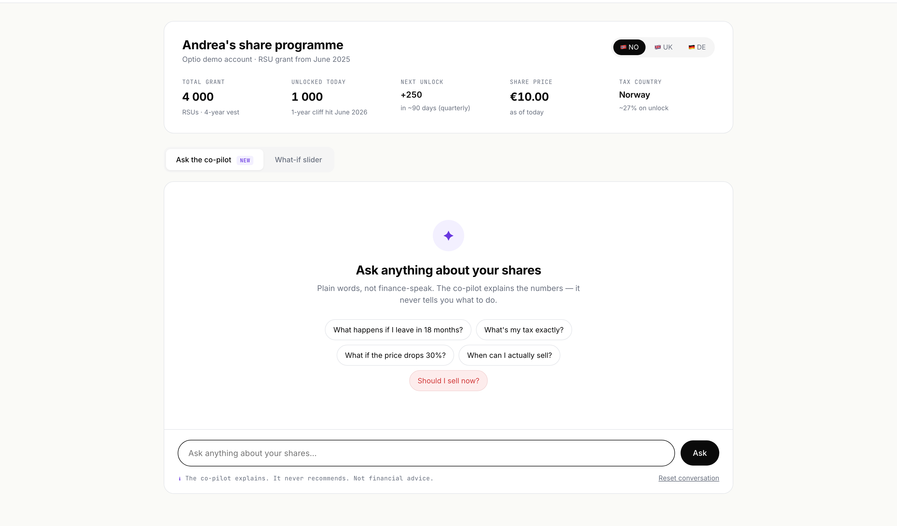

The math runs itself
Tax rules per country, share-unlock schedules, blackout windows, currency. All calculated against the participant's actual programme, in the background. No manual setup, no remembering the formula.

Ask anything. Switch countries. Toggle the what-if slider. The prototype covers the edge cases — including the questions the co-pilot won't answer.
The original simulator opened on a slider: what if the share price moves X%? People had to bring their own math — when their shares unlock, what tax looks like, what happens if they leave. The static answer didn't help with the actual question. And the people opening it twice a year couldn't remember enough of the language to ask it properly.
“A simulator that only returns a number isn't simulating much.”
Tax rules per country, share-unlock schedules, blackout windows, currency. All calculated against the participant's actual programme, in the background. No manual setup, no remembering the formula.
The slider stays for the people who want it. But most people don't think in percentages — they think in life events. The new front door is a question box: “ask anything about your shares.”
The co-pilot explains. It does not recommend. “Sell now” / “wait until next quarter” — that's a financial decision the simulator never makes. The risk of an AI giving someone wrong advice about their own money is too high to accept.
Ask in your own words. “What happens if I leave in 18 months?” “Why is my tax different from a colleague's?” The co-pilot answers against the actual math of the user's programme — in the language they already use.
“What happens if I leave in 18 months?”
In 18 months, 1 250 of your shares will have unlocked. You'd be able to sell them inside a 90-day window. The remaining 2 750 would go back to the company. At today's price and Norwegian tax rules, that's about €12 500 in your pocket after tax.
“Why is my tax different from my colleague's?”
Your shares are taxed under Norwegian rules — the tax happens when each share unlocks, at your income tax rate. Your colleague's contract is under UK rules — they're taxed only when they sell. Same programme, different countries, different timing.